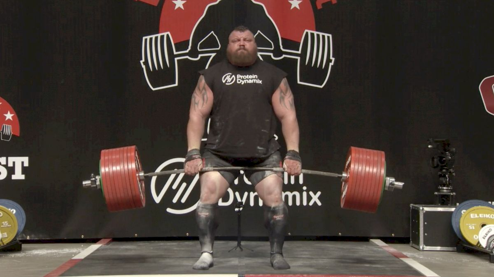
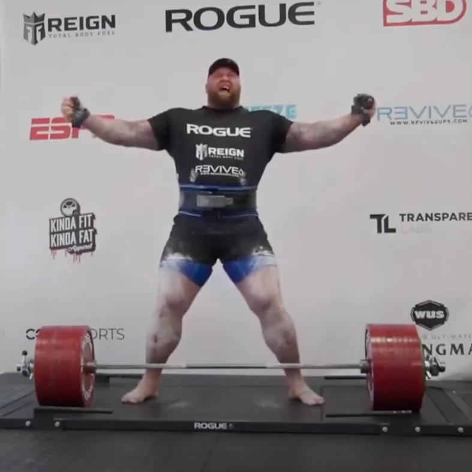

Welcome to the Breakdown of Eddie Hall vs Hafthor Julius Bjornsson Deadlift World Record
First off, what is a deadlift?
A deadlift is a weightlifting exercise where a person lifts a loaded barbell from the ground to the hips, then lowers it. It’s one of the three powerlifts (with squat and bench) and heavily involves the lower back, glutes, hamstrings, and core—plus forearms and traps. In strongman, athletes must pull conventionally (hands outside feet) and may use supportive gear (e.g., deadlift suits, figure-8 straps), depending on the contest. These distinctions matter because “world record deadlift” claims vary by ruleset. In common conversation, people usually mean the strongman record in competition—like Eddie “The Beast” Hall’s 500 kg (1,102 lb) lift.
The Road to Eddie Hall’s 500 kg Deadlift
In 2016, Eddie Hall shocked the strength world by deadlifting 500 kilograms (1,102 pounds) at the Giants Live World Deadlift Championships in Leeds, England. The strain left him with nosebleeds and near blackout—but he became the first to break the half-ton barrier, declaring no one would surpass it without dire consequences.
Watch the lift: Eddie Hall’s 500 kg Deadlift (video) .
After the Dispute, Thor Enters the Conversation
Hafthor Julius Björnsson (“The Mountain”)—2018 World’s Strongest Man—set his sights on 501 kg. In 2020, during lockdowns, he announced an attempt to top Eddie’s mark.
The Controversy
Thor’s 501 kg attempt occurred in his Iceland home gym with calibrated plates and referees, broadcast live. Eddie argued it wasn’t equivalent to a Giants Live arena setting. The disagreement intensified across interviews and social media.
Thor’s First World Record Deadlift
On May 2, 2020, Thor successfully deadlifted 501 kg, breaking Hall’s record. Debate continued over context, but the number was historic.
Here is where we are so far:
- What is a deadlift?
- Eddie Hall’s 500 kg world record
- Thor’s 501 kg lift and the controversy
Watch Thor’s 501 kg: Thor’s 501 kg Deadlift (video)